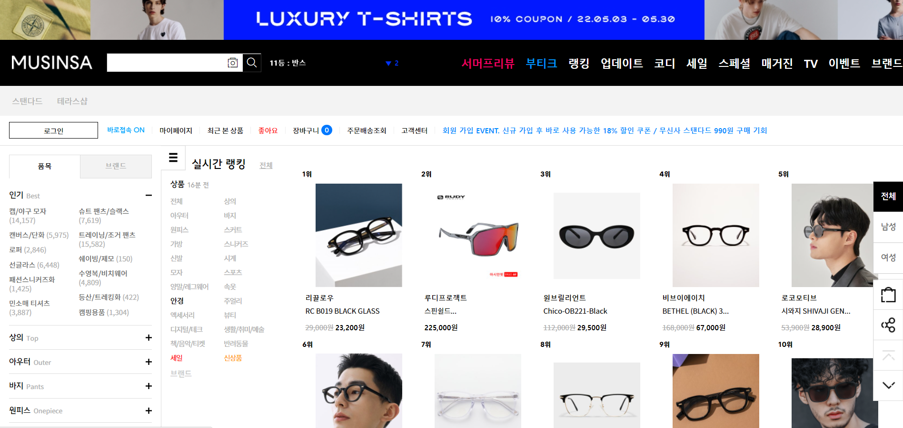
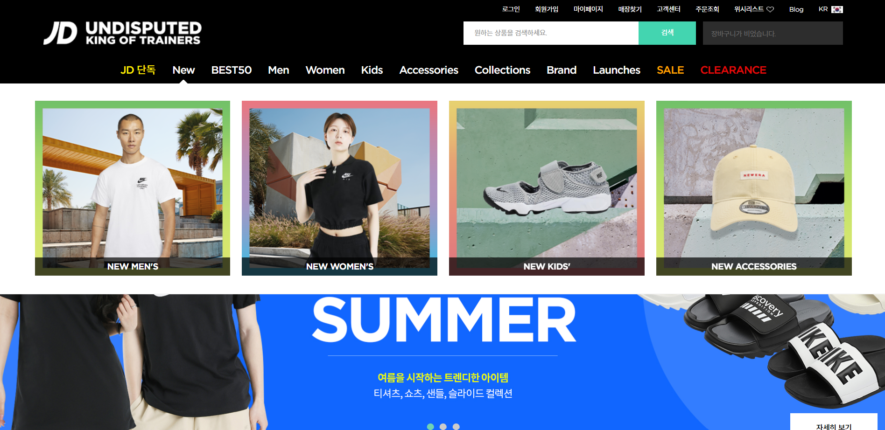

무신사 Musinsa
장점
1. 대형 규모의 편집샵이라는 장점을 살려 한 화면에 많은 상품을 볼 수 있다.
2. 편집샵의 특징인 어느 상품이 많이 검색되며 구매가 되는지 알려주는 실시간검색 순위를 알려준다.
단점
1. 많은 카테고리들이 외부에 노출이 되어 상품에 집중하기 힘들다.
2. 이미지가 많아 접속 시간이 다소 걸린다.


JD Sports
장점
1. 난잡하지 않아 상품을 보기 편안하며 깔끔하다.
2. 많은 이미지들이 들어가 있지만 상대적으로 빠르다.
단점
1. 이미지가 상대적으로 크게 느껴져 한 화면에서 많은 상품을 보기 힘들다.
2.


스팀 Steam
장점
1. 전체적인 어두운 배경색으로 인하여 많은 정보를 보아도 눈의 피로감이 덜 하다.
2. 알아보기 편한 카테고리로 인하여 쉽게 이용이 가능하다.
단점
1. 폰트 사이즈가 작아 잘못 클릭 할 가능성이 크다.
2. 부가 상세 내용의 글자들이 흐릿하여 한 눈에 보이지 알아보기 힘들다.